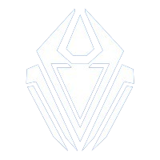

I'm Mohamed Khalil Chabir , with 2+ year of professional experience mostly in Gameplay and AI Programming.
Game studios worked with/in

Projects
Herodot Studio - PFE
Wakeup: Medina Thrills - Intern AI Game Programmer
This project is a take on the Space Shooter genre. I developed my own ECS and used the Wave Function Collapse-algorithm as a background generator.
GGJ Tunisia 2024
The Hangover - Game Programmer
This project is a take on the Space Shooter genre. I developed my own ECS and used the Wave Function Collapse-algorithm as a background generator.
University Project - TPS
The Project X - Third Preson Shooter
This project is a take on the Space Shooter genre. I developed my own ECS and used the Wave Function Collapse-algorithm as a background generator.
NKX Studio
Aaron Crusade - Level Designer (Freelance)
This project is a take on the Space Shooter genre. I developed my own ECS and used the Wave Function Collapse-algorithm as a background generator.
University Project - VR
Quiver VR - VR Development
This project is a take on the Space Shooter genre. I developed my own ECS and used the Wave Function Collapse-algorithm as a background generator.
Blade & Fight Studio
Tunis to mars - 2D Endless Space Runner
This project is a take on the Space Shooter genre. I developed my own ECS and used the Wave Function Collapse-algorithm as a background generator.